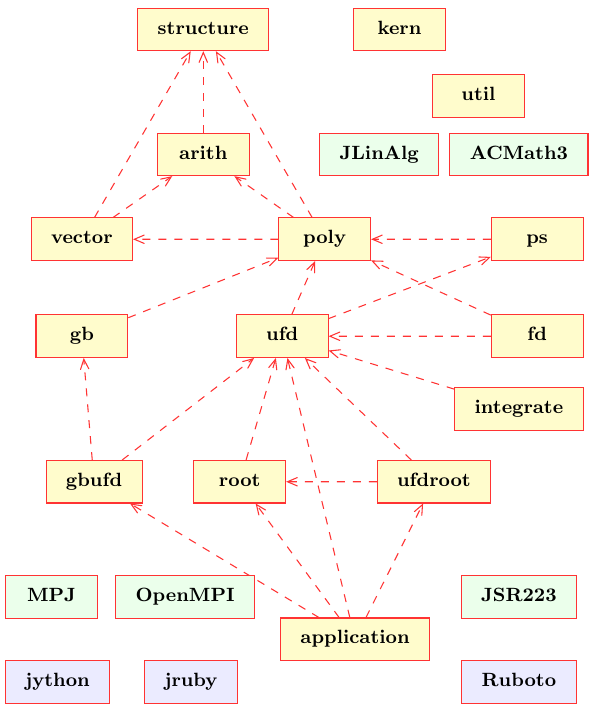

The JAS software library contains at the moment of the following packages. The relations and dependencies between the packages are shown in figure 1.
RingElem and RingFactory.
BigRational, BigInteger,
ModInteger, BigDecimal or
BigComplex.
GenPolynomial, GenSolvablePolynomial,
GenWordPolynomial and others such as
AlgebraicNumber and a polynomial parser
GenPolynomialTokenizer.
GenVector or GenMatrix.
ReductionSeq, GroebnerBaseAbstract,
GroebnerBaseSeq, GroebnerBaseParallel and
GroebnerBaseDistributedHybridEC. There are also Gröbner
bases in polynomial rings over principal ideal domains and Euclidean
domains, so called D- and E-Gröbner bases,
e.g. EGroebnerBaseSeq. New are Gröbner bases in
free non-commutative polynomial rings over (skew) fields,
see WordGroebnerBaseSeq.
ModGroebnerBase or SolvableSyzygy.
Ideal
or SolvableIdeal. Comprehensive Gröbner bases for
polynomial rings over parameter rings are contained in class
ComprehensiveGroebnerBaseSeq. Latest additions are
zero and arbitrary dimensional radical-, irreducible-, prime- and
primary-decomposition implemented in class Ideal.
GreatestCommonDivisor, the abstract class
GreatestCommonDivisorAbstract and various
implementations, e.g. polynomial remainder sequences and modular
algorithms. The package now contains factorization algorithms for
univariate polynomials over several coefficient rings: modulo primes
in class FactorModular, over integers in class
FactorInteger, over rational numbers in class
FactorRational and over algebraic numbers in class
FactorAlgebraic<C>.
PseudoReduction, PseudoReductionSeq and
greatest common divisors computation on coefficients
GroebnerBasePseudoSeq. Multiplicative sets of
polynomials with several simplifications, e.g. maintaining co-prime
factors or co-prime and squarefree factors, are contained in classes
MultiplicativeSet, MultiplicativeSetCoPrime
or MultiplicativeSetSquarefree. Also contained are
Gröbner bases for polynomial rings over regular rings (direct
products of fields or integral domains) in
RGroebnerBaseSeq and RGroebnerBasePseudoSeq.
RealRoots, the abstract class
RealRootsAbstract and at the moment of a single
implementation based on Sturm sequences RealRootsSturm.
The package further contains an implementation for real algebraic numbers
RealAlgebraicNumber with a corresponding factory
RealAlgebraicRing.
For complex root isolation there are ComplexRoots interface,
ComplexRootsAbstract and ComplexRootsSturm classes.
The implementation provides an exact infallible method which follows
the numeric method of Wilf. It uses Sturm sequences following the
Routh-Hurwitz Method to count the number of complex roots within a
rectangle in the complex plane.
There is also an implementation for complex algebraic numbers
ComplexAlgebraicNumber with a corresponding factory
ComplexAlgebraicRing.
FactorRealAlgebraic.
UnivPowerSeries and MultiVarPowerSeries.
There is an initial implementation of Mora's tangent cone reduction algorithm
in class ReductionSeq and a standard bases computation in
StandardBaseSeq with method STD().
ElementaryIntegration with method
integrate().
ThreadPool, DistThreadPool or
DistHashTable. Part of this package has become obsolete
with JDK 1.5.
FDUtil.
Further, methods for common divisors are included, but not yet
finished.

Figure 1: Package and component structure overview
Last modified: Mon Mar 28 23:49:24 CEST 2016